Obsah
Popis
Pôvodná hra Snake vznikla už v roku 1976. Zaujímavé je že pôvodná verzia bola pre dvoch hráčov. Jednoduchosť a chytľavý koncept túto hru spopularizovali až sa jej najpopulárnejšia varianta dostala v roku 1998 na mobilné telefóny Nokia. Túto verziu už väčšina ľudí dobre pozná. Na malej statickej, väčšinou štvorcovej obrazovke hráč ovláda hada, s ktorým zbiera jedlo po, ktoré sa náhodne objavuje na mape. Zjedením jedla had rastie a zaberá väčšiu časť mapy. S každým získaným jedlom hráč dostane bod, had narastie a hra je ťažšia, pretože hráč s hadom nemôže naraziť do do svojeho chvostu, alebo do steny a miesta je stále menej a menej. To si vyžaduje chvíľu praxe a určitú známku stratégie ako hru hrať. Bežný hráč sa takéto jednoduché pravidlá rýchlo naučí a dosiahne celkom zaujímavý výsledok. No čo keby sme to chceli naučiť len pár neurónov? Dokáže sa pár neurónov naučiť zbierať body v tejto klasickej hre, alebo je na to potrebné človeka? To sa dozvieme v tejto práci.
Definícia problému
Aby sme pár neurónov (ďalej už neurálnu sieť) naučili hrať hru Snake, môžeme použiť množstvo metód ako napríklad posilované učenie, alebo evolučný algoritmus. Práve evolučný algoritmus som sa rozhodol použiť, pretože cieľom práce je niečo simulovať a simulovať evolúciu znie dobre. No evolučný algoritmus je potrebné správne nastaviť. Obsahuje veľké množstvo parametrov, ktorých nastavovaním sa dá evolúcia posúvať správnym smerom a meniť rýchlosť tohoto posúvania.
Cieľ
Práca má dva ciele, jeden ofociálny a jeden neoficiálny.
- Oficiálny cieľ práce je zistiť najvhodnejšie nastavenie parametrov evolučného algoritmu, aby sme urýchlili učenie neurónovej siete.
- Neoficiálny cieľ práce - môj súkromný cieľ je vycvičiť agenta, ktorý stabilne dosiahne aspoň skóre 10 a nebude to vyzerať ako náhodné zbieranie bodov.
Metóda
Ako už bolo spomínané, práca bude využívať evolučný algoritmus, aby simulovala evolúciu neurínovej siete. Pre tento účel budem používať programovací jazyk Python. Ten ponúka množstvo knižníc, ktoré k tomu môžem využiť. Pre prácu s maticami váh neurónovej siete knižnicu Numpy. Pre interpretovanie výsledkov a vykresľovanie grafov knižnicu Matplotlib. A v neposlednom rade pre (nie tak dôležité, ale pre mňa veľmi dôležité) zobrazenie hry knižnicu Tkinter.
Model
Agenti
Každý agent pozostáva z neurónovej siete. Agent "vidí" do ômych smerov (hore, dole, vľavo, vpravo, vpravo-hore, vpravo-dole, vľavo-dole, vľavo-hore) od hlavy hada. Pre každý smer vidí vzdialenosť k stene, vzdialenosť k jablku (ak ho v daný smer vidí) a vzdialenosť ku svojemu chvostu (ak ho v daný smer vidí). Čiže na vstupnej vrstve má 24 neurónov (8 smerov x 3 indikátory) + 4 neuróny predstavujúce smer do ktorého ide hlava hada. Celkovo 28 neurónov. Počet skrytých vrstiev a neurónov v nich je pre zjednodušenie problému pevne daný - skryté vrstvy sú dve a obsahujú 20 a 12 neurónov. Váhy väzieb medzi neurónami sú z počiatku náhodné z uniformného rozdelenia, následne sú menené mutáciami agentov. Na výstupe neurónovej siete je smer akým sa má had ďalej uberať, čiže 4 neuróny pre Hore, Dole, Vľavo, Vpravo.
Aktivácie
Neuróny skrytých vrstiev používajú ako aktivačnú funkciu ReLU:
$$\mathrm{ReLU}(x)=\max(0, x)$$
Neuróny na poslednej výstupnej vrstve používajú ako aktivačnú funkciu Sigmoid a ako výstup sa vyberie neurón s najväčšou hodnotou výstupu:
$$\sigma(x)=\frac{1}{1+e^{-x}}$$
Prostredie
Prostredím v ktorom agenti pôsobia je obyčajná hra snake ako aj evolúcia v ktorej sa nachádzajú. Hra má rozmery 10x10 (výška a šírka) a jedlo sa generuje na náhodnú pozíciu. Pre simuláciu evolúcie je potrebné simulovať viacero generácií E a v každej generácii je populácia agentov o veľkosti N. Každý agent hrá samostatnú inštanciu hry Snake g krát (g je viac ako 1, pretože agenti môžu mať niekedy "smolu" a skončiť rýchlo - tým by sme zabili potencionálne úspešných jedincov, alebo "šťastie" - tým by sme odmeňovali jedincov, ktorý si to nezaslúžia). Výsledky g hier sa pre každého agenta spriemerujú.
Po odohraní hier agentov v danej generácii sa vypočíta fitness (skóre) najlepšieho agenta. Fitness sa počíta ako funkcia počtu dosiahnutých bodov a počtu krokov, ktoré agent urobil. Konkrétna funkcia vyzerá nasledovne[1]:
Fitness funkcia použitá pre hodnotenie. Zdroj: SnakeFusion - fitness function kde steps je počet krokov, ktoré agent vykonal a points sú body, ktoré získal. Táto funkcia sa po mnohých pokusoch ukázala byť najefektívnejšia. Cieľom tejto fitness funkcie je zo začiatku odmeňovať agentov, ktorý prežijú čo najdlhšie, čiže urobia viacej krokov, no neskôr odmeňovať zbieranie bodov. Pre menšie hodnoty počtu bodov (<10), fitness hodnota rýchlo rastie s narastajúcim počtom bodov. Toto môže byť užitočné na rýchle odmeňovanie prvých úspechov. Pre väčšie hodnoty počtu bodov (≥10), exponenciálny rast sa stabilizuje a ďalej sa zvyšuje iba lineárne s počtom bodov. Toto môže zabrániť nekontrolovanému rastu fitness hodnoty pri veľmi vysokých počtoch bodov a udržiavať výpočty zvládnuteľnými.
Podľa fitness sa vyberú jedinci pre ďalšiu generáciu (podľa miery elitizmu e). Teda sa vyberie N * e najlepších jedincov pre ďalšiu populáciu. Ďalej sa generácia doplní novo vytvorenými agentami (potomkami), ktorí vzniknú krížením dvoch náhodne vybratých agentov (ruletový výber). Kríženie prebieha prechádzaním váh rodičov a náhodným výberom váhy jedného z rodičov pre potomka. Potomkovia sú následne zmutovaní podľa miery mutácie m (pridanie hodnoty z normálneho rozdelenia s pravdepodobnosťou m pre každú váhu).
Pevné premenné
- Počet generácií G = 500
- Veľkosť populácie N = 500
- Počet hier jedného jedinca g = 3
- Počet skrytých vrstiev = 2
- Počet neurónov na prvej skrytej vrstve = 20
- Počet neurónov na druhej skrytej vrstve = 12
- Aktivačná funkcia neurónov na skrytých vrstvách = ReLU
- Aktivačná funkcia na výstupnej vrstve = Sigmoid
- Veľkosť hernej plochy = 10x10 polí
Voľné premenné
Miera elitizmu e a miera mutácie m.
Proces vývoja
Táto časť práce je myslená len ako súhrn zaujímavostí na ktoré som pri implpementácií narazil. Nie je podstatná pre záver práce, no prišlo mi, že by bola škoda sa o tom nezmieniť.
Prvé zjedenie
Pôvodne som hru púšťal na väčšej mape, to mi ale neskôr prišlo zbytočné. Každopádne tu je prvé zjedenie (čo bola len náhoda, že tam zabočil, ale aj tak, bolo to super):
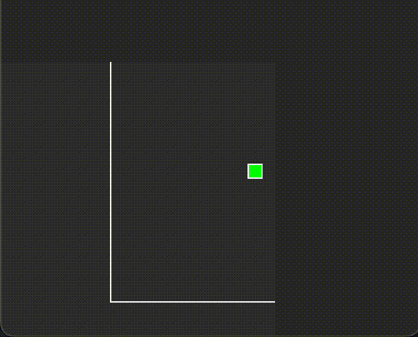
Takéto náhody je cieľom obmedziť, aby bolo zrejme že had ide po jedle.
Hľadá jedlo
Prvý krát, čo som začínal mať pocit, že agent ide za jedlom a nie je to náhoda bolo pri tomto pokuse kde dosiahol 4 body:
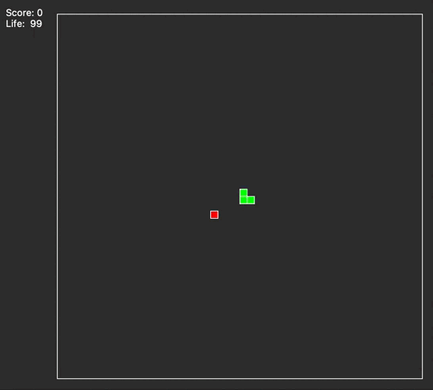
Životnosť hada
Ako môžete vidieť na predchádzajúcom gife, tak had má parameter Life - ten som musel pridať, pretože z toho ako funguje fitness funkcia sa stávalo, že sa agenti zacyklili, pretože zistili, že keď budú krúžiť, tak nikdy neumrú a dosiahnu veľké skóre. Agenti majú teraz životnosť, počas ktorej musia nájsť ďalšie jedlo. Ak jedlo nájdu, tak sa im vyresetuje životnosť, ak nie, tak zomrú. Ďalej je vidno že som zmenšil mapu, pretože veľkosť mapy hrá rolu v dĺžke hry nie v procese učenia a potreboval som učenie urýchliť. A TEN HAD DOSIAHOL 6 BODOV!! Tu je príklad daného zacykleného hada:
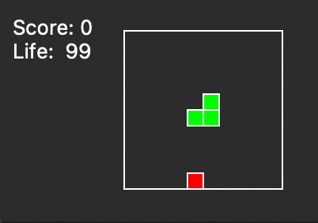
ONO TO ŽIJE
A po tisíckach neúspešných agentov, po stovkách generácií to konečne prišlo. Začali chodiť za jedlom. Najprv zjedol 6, potom 8, potom 10 kúskov. S každým pokrokom som sa tešil viac a viac. Bolo vtipné sledovať ako pri generácii okolo 400 úspešný agent vedel nahrať celkom dobré skóre, no bál sa vojsť do ľavého horného rohu (for some reason). Ešte 100 generácií po ňom, nechodili žiadny agenti do toho istého rohu a za každú cenu sa mu vyhýbali. A asi po 800 generáciách (približne 2 milióny hier) prišiel najlepší výsledok - skóre 42!!!
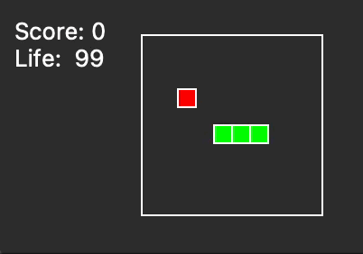
Bohužiaľ tento výsledok sa mi znovu nepodarilo zopakovať. A pevne zadaný seed pre generovanie náhodných hodnôt som naimplementoval až po tomto pokuse, čiže neviem aké náhodné hodnoty boli použité pri trénovaní tohoto agenta. Každopádne všetky ďalšie pokusy nemali problém disiahnuť skóre okolo tridsiatky. Ale(!) ukladal som si váhy vrstiev (proste jeho mozog) všetkých agentov. A tento mozog som uložil tiež, takže ho môžem púšťať hrať znovu a znovu:
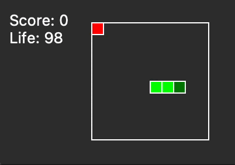
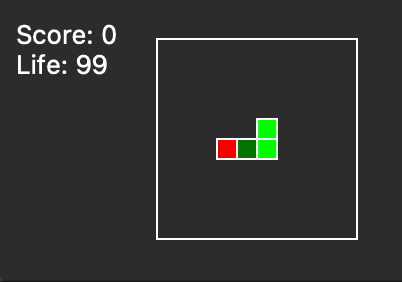
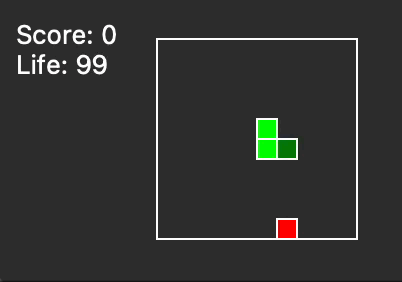
S tým, že pri každom behu dosiahne výsledok ktorý je lepší ako 10 bodov, čiže neoficiálny cieľ je splnený! Jo a pridal som hlavičku, nech je lepšie vidno, čo sa deje.
Výsledky
Teraz oficiálnejšia časť - zisťovanie najvhodnejších parametrov pre mieru mutácie a mieru elitizmu. Preto si zavedieme tabuľku s hodnotami miery elitizmu v hlavičke a hodnotami miery mutácie v prvom stĺpci. Budeme hodnotiť aké najväčšie skóre a aké priemerné skóre dosiahnú agenti v evolúcii s danými parametrami. (Zaujímavosť: v každej bunke tabuľky je teda 500 generácií po 500 jedincoch ktorý hrajú 3 hry - to je 750_000 hier na bunku. Výpočet jednej evolúcie (bunky v tabuľke) u mňa lokálne bežal viac ako pol hodinu) Všetky testy budú mať rovnaký seed = 42. Umiestnenie grafov pod tabuľkami zodpovedá výsledkom v bunkách tabuliek.
Tabuľky výsledkov
Najlepšie skóre (celkovo), priemerné skóre, najlepšie skóre v poslednej generácii a priemerné skóre v poslednej generácii sú zobrazené nižšie.
Nižšie sú grafy (PNG) pre jednotlivé kombinácie elitizmu a mutácie:
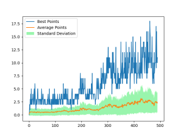
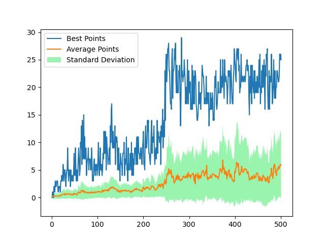
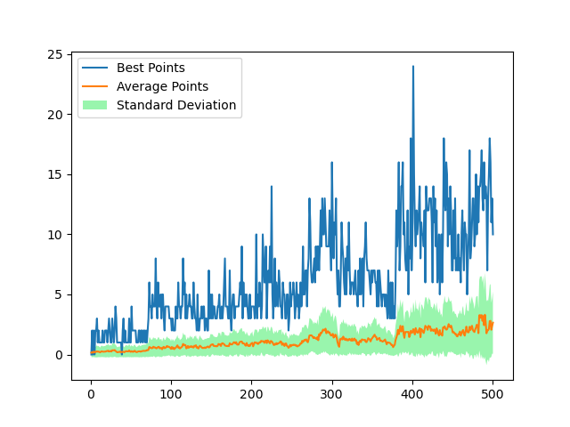
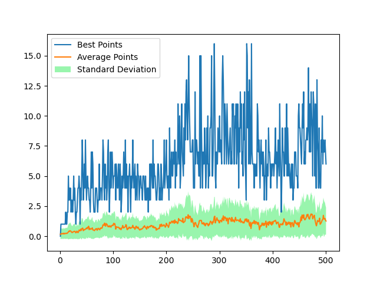
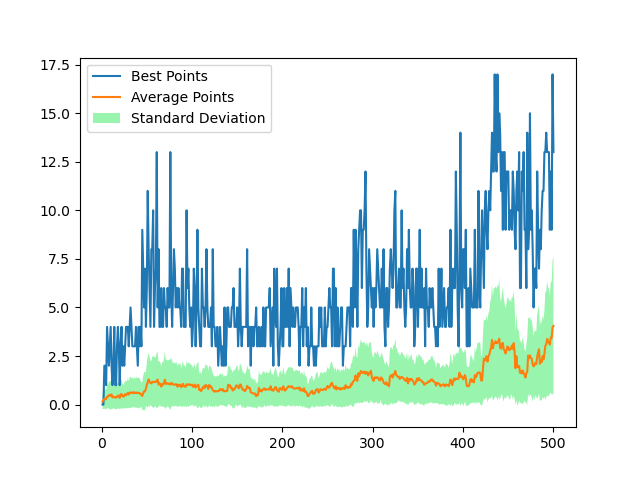
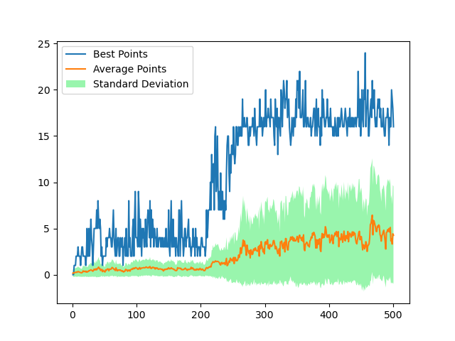
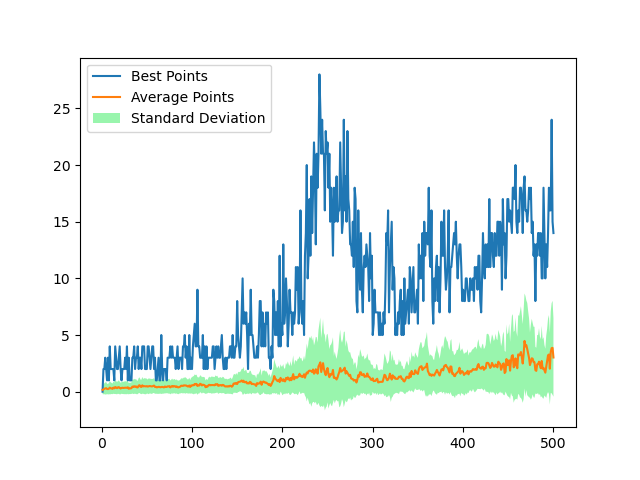
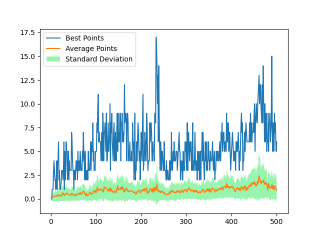
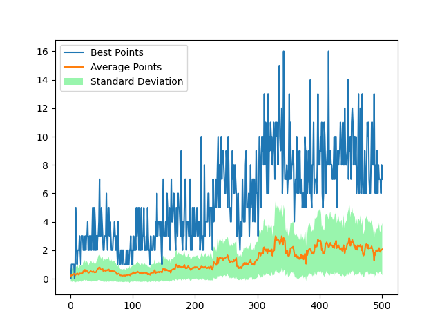
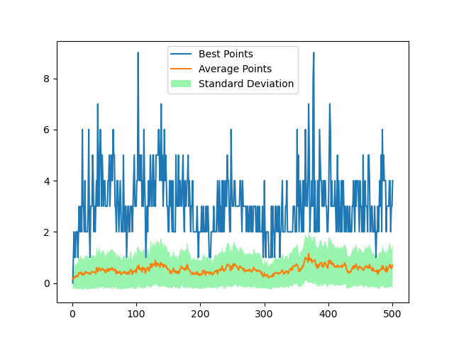
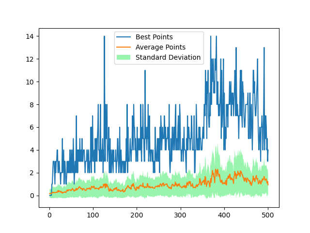
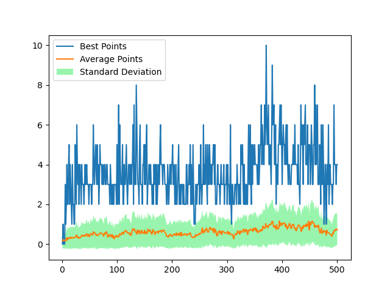
Záver
Z pozorovaných výsledkov môžeme odvodiť, že evolučnému algoritmu sa najviac darí trénovať neurónové siete hrať hru snake pri miere elitizmu 0.002 a pri miere mutácie 0.05.
Zaujímavé je, že miera elitizmu 0.002 pri populácii 500 jedincov predstavuje jedného agenta, čiže z každej populácie postúpi do ďalšej generácie iba jeden najlepší jedinec. Ďalším zaujímavým pozorovaním je že pri väčšine evolúcií mali agenti najväčší rast v bodoch pri generácii okolo 200+. Pri vysokej miere mutácie sa síce agenti učili rýchlejšie, ale získané znalosti si nedokázali udržať. Z hľadiska smerodajnej odchylky a priemerných získaných bodov mali veľmi dobré výsledky evolúcie s mierou mutácie 0.05, kde sa dal pozorovať rýchli rast, ktorý bol ale stále udržateľný.